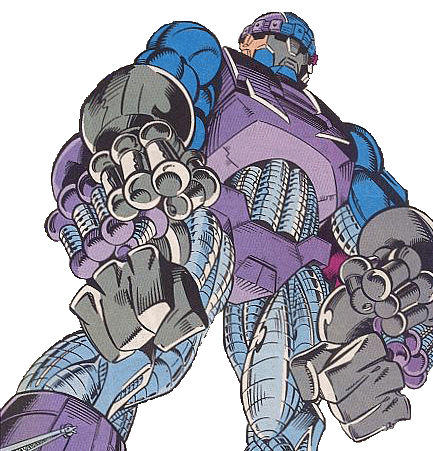
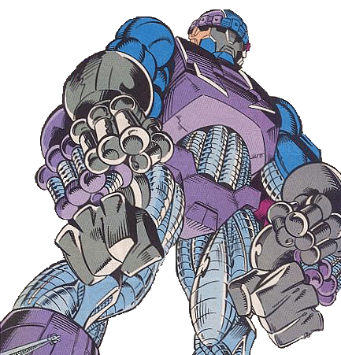

‹엑스맨 2: 엑스투›는 찰스 자비에 영재학교를 배경으로 이야기가 전개됩니다. 전편 ‹엑스맨›에서는 인간과 돌연변이의 평화와 공존을 그리며 능력에 따른 윤리적 책임을 교육하는 찰스 자비에 영재학교의 존재를 보여주기 위해 수업을 받는 학생들이 등장했다면, ‹엑스맨 2: 엑스투›에서는 미래와 희망의 공간인 찰스 자비에 영재학교에서 어린 돌연변이들을 좀 더 나은 미래로 이끄는 엑스맨들과 어린 돌연변이들이 같이 생활하고 있는 자연스러운 모습들이 주로 등장합니다.
두 명의 학생이 책상에 앉아 숙제를 하는 듯한 장면에서 책 등만 보이는 세 권의 책을 발견했습니다. 첫 번째 책은 정보를 거의 알아볼 수 없고, 두 번째와 세 번째 책은 책등에서 발견한 단어들로 제목을 추측해볼 수 있었습니다. 두 번째 책의 책등에서는 ‘study in new...of...’가 보입니다. 세 번째 책의 책등에는 ‘ECOLOGY(생태학)’가 선명하게 적혀있습니다. 자비에 영재학교에서는 보통의 교과목을 포함하여 자신의 능력과 관련된 수업을 선택하여 수강할 수 있다는 점을 생각해봤을 때, 학생들이 평소에 읽는 책 또한 자신의 능력을 이해하기 위한 책일 수 있다고 추측해볼 수 있습니다. 책의 제목이 보이지 않는 경우, 책의 제목을 완성하기 위해 책의 주인인 것 같은 콜로서스를 자세히 조사했고 책의 제목이 선명히 보이는 경우, 콜로서스가 해당 책을 읽는 이유를 추측해나갔습니다.
책의 소유자인 콜로서스는 어떤 새로운 것(study in new)을 연구하고 있을까요? 책과 함께 발견된 콜로서스라는 인물에 대해 알아봅니다. 콜로서스는 자신의 신체를 금속의 형태로 변환하는 초능력을 갖고 있습니다. 콜로서스는 13살 때, 고향에서 농사를 짓던 중 트랙터의 폭주로 여동생 매직이 깔릴 뻔하자 그것을 몸으로 막으면서 능력이 발현됐습니다. 영화 엑스맨 시리즈에서는 체르노빌 원자력 발전소 사고로 인해 아기 때부터 돌연변이가 발현된 것으로 코믹스와 설정이 조금 다릅니다. 거대한 금속 덩어리인 신체는 초인적인 힘을 발휘하며, 인간의 근육보다 피로 누적량이 적기 때문에 며칠 동안 신체를 움직일 수 있는 체력을 갖고 있습니다. 그는 총알은 물론, 155mm의 곡사포도 견딜 수 있으며, 섭씨 -70℃부터 약 5,000℃의 극한 온도에서도 살아남을 수 있는 내구성을 갖습니다. 변환된 신체는 음식이나, 물 심지어는 공기마저도 섭취할 필요가 없어서 우주 공간에서도 문제없이 생존할 수 있습니다.
하지만 예외도 있습니다. 그는 반 금속 비브라늄, 즉 남극 비브라늄과 접촉하면 자신의 신체를 금속으로 유지하지 못하고 인간의 피부로 되돌아가는 약점을 갖고 있습니다. «엑스맨: 팀 버스터 전투! 오드vs엑스레이븐»에서 오드가 가지고 있는 남극 비브라늄 무기에 찔려 능력을 잃은 콜로서스를 볼 수 있습니다. 오드는 “이 검은 비브라늄으로 되어있다. 금속에 독성이 있지. 네 몸은 본능에 따라 인간이 될 거다”라고 말한 바 있습니다.
비브라늄(Vibranium)은 마블 코믹스에 등장하는 가상의 금속으로, 마블의 3대 금속 중 하나입니다. 마블의 3대 금속은 비브라늄을 포함해, 울버린의 본드 클로인 아다만티움, 토르의 망치-묠니르의 재료인 우르이며 마블 코믹스 세계관 내에서 가장 강력한 금속들로 알려져 있습니다. 비브라늄은 진동을 의미하는 ‘Vibrancy’와 원소명의 어미에 쓰이는 ‘-ium’의 합성어로, 비브라늄의 특성은 진동과 관련이 있습니다. 비브라늄은 다양한 형태로 변형될 가능성이 있으며, 그 변형은 크게 와칸다 지방에서 추출되는 와칸다 비브라늄과, 남극의 추출되는 남극 비브라늄으로 나뉩니다. 코믹스에서 등장하는 비브라늄은 대부분 와칸다 비브라늄을 지칭하고 있습니다. 마블 영화에서 자주 볼 수 있는 캡틴 아메리카의 방패와 블랜팬서의 갑옷이 이 와칸다 비브라늄으로 만들어졌습니다.
와칸다 비브라늄은 와칸다 지방에서 추출되며, 음파와 같은 주변의 진동 에너지나 외부의 충격으로 발생하는 강한 진동 에너지를 100% 흡수하는 특성이 있습니다. 진동 에너지는 와칸다 비브라늄을 구성하는 분자 자체의 진동 속도에 영향을 미치지 않고 분자 사이의 결합 내에 저장되며, 강한 충격에도 거의 부서지지 않는 특성이 있습니다. 하지만 파괴하기에 충분한 힘을 가하면, 가해진 충격만큼의 강한 폭발력을 방출하게 됩니다. 비브라늄에서 발생하는 진동이 극대화되면 심각한 방사능 유출과도 비슷한 상황이 발생할 수 있습니다. 이런 현상은 인간 DNA의 수소결합을 절단하여 유전자를 파괴하거나 변형시키는 방사능 피폭현상과 비슷합니다. 이를 증명하는 사례로는 «블랙팬서 Vol. 1»에서 비브라늄으로 구성된 운석이 떨어지자 비브라늄에서 발생하는 진동 탓에 일부 부족을 악마로 만든 장면이 있습니다. 이런 피폭 결과로 아프리카 대륙에서 많은 돌연변이가 출현하게 됩니다.
폭스 사는 ‹엑스맨: 데이즈 오브 퓨처 패스트›를 개봉하면서 캠페인성 웹사이트 ‘엑스맨: 25개의 사건(www.25moments.com)’를 공개한 적이 있습니다. 엑스맨들이 겪은 25개의 역사적 사건들을 정리해놓은 이 사이트에는 체르노빌 원자력 발전소 사고로 태어난 콜로서스의 사진이 게시되어 있습니다. ‹엑스맨: 퍼스트 클래스›에서 찰스 자비에는 “핵 시대의 도래가 돌연변이 과정을 가속했을 수도 있죠. 비범한 초능력을 가진 이들이 이미 주변에 있을지도 모릅니다.”라고 말한 바 있습니다.
남극 비브라늄은 야만인 땅(Savage land)으로 알려진 남극 대륙의 고립된 열대 지역에서 추출되는 안티메탈(Anti-Metal)로 잘 알려졌으며, 남극 비브라늄은 충격 에너지를 흡수할 뿐만 아니라 특수한 진동 파장을 발생시켜서 고체 금속을 액체로 변화시키는 특성이 있습니다. 현대 물리학에서 금속을 녹이는 방법으로는 금속을 가열하거나 화학적 반응을 이용하는 방법이 존재합니다. 하지만 비브라늄은 물리적 에너지를 더하지 않고도 금속 자체에서 발생하는 진동을 이용해 금속을 액체로 변화시킵니다. 남극 비브라늄에서 발생한 진동이 인근 금속의 결합 상태에 운동 에너지를 전달하면 금속의 분자 간의 인력이 약화하어 고체의 상태이던 금속을 액체로 변화시킨다는 추측이 가장 유력합니다.
비브라늄이 도구로 활용된 사례를 찾아봅시다. 와칸다 비브라늄이 도구로 활용된 예는 마블 영화에서 충분히 찾을 수 있습니다. 마블 영화에서 처음으로 등장한 비브라늄 도구는 캡틴 아메리카의 방패입니다. 마블 영화에서는 아이언맨의 아버지인 하워드 스타크가 만든 순도 100%의 비브라늄 도구라고 소개되었지만, 마블 코믹스 설정상 캡틴 아메리카의 방패는 밀론 맥레인이라는 인물이 강력한 물질을 만들려는 도중에 알 수 없는 원인으로 비브라늄과 다른 금속이 합금 되며 만들어진 미국 최초의 비브라늄 도구입니다. 밀론 맥레인은 캡틴 아메리카의 방패에서 비브라늄과 알 수 없는 금속을 분리하려는 시도에서 탄생시킨 것이 바로 마블의 3대 금속 중 하나인 아다만티움입니다. <캡틴 아메리카: 시빌 워>에서 블랙 팬서의 손톱과 캡틴 아메리카의 방패가 마찰하자, 강한 내구성을 갖고 있던 캡틴 아메리카의 방패에 상처가 나는 장면이 나옵니다. 이는 순도 100%로 제작되었다고 소개된 방패의 모순입니다.
와칸다 비브라늄은 주변의 모든 진동을 흡수할 뿐만 아니라 진동으로 얻은 운동 에너지를 흡수할 수 있는 특성이 있는데, 캡틴 아메리카의 방패가 이러한 원리를 잘 활용하고 있습니다. 캡틴 아메리카의 방패는 던져진 자체로도 운동에너지를 갖고 있지만, 물체에 부딪히면서 발생하는 충격 에너지를 이용해 다시 캡틴 아메리카에게 돌아오는 운동 에너지를 가질 수 있습니다. 그다음으로 활용된 와칸다 비브라늄의 예는 ‹어벤져스: 에이지 오브 울트론›에 있습니다. 울트론은 아이언맨이 설계한 평화 유지용 인공지능입니다. 울트론은 평화 유지 목적으로 설계되었지만, 지구의 역사를 학습한 뒤에는 인류 자체를 지구의 평화에 가장 큰 위협으로 간주하고 인류를 말살하려고 합니다. 프로그램으로만 존재하던 울트론은 와칸다에서 비브라늄을 탈취하여 비브라늄을 이용해 신체를 만들어내고 비브라늄 코어의 자기력을 이용해 지구를 파괴할 계획을 갖게 됩니다. 울트론이 만든 비브라늄 코어의 자기력은 굉장히 강력해서 소코비아 마을 전체를 들어 올릴 수 있는데, 이 자기력을 파괴할 만한 충격을 가하면 비브라늄이 그 힘을 흡수하여 엄청난 폭발력을 갖게 됩니다. 울트론은 소코비아 마을을 들어 올려 지구를 박살 내려는 계획을 하고 있었지만, 어벤져스에 의해 실패합니다.
또 하나의 도구는 와칸다의 왕이자 전사인 블랙팬서가 소유한 전신 비브라늄 갑옷입니다. 전신을 감싸고 있는 비브라늄 직물과 날카로운 클로는 전부 비브라늄으로 제작되었습니다. 클로는 확장과 수축이 자유롭도록 설계되었고, 숨겨진 일부 발톱에는 남극 비브라늄을 사용한 것으로 알려졌습니다. 그는 충격 에너지를 흡수하는 와칸다 비브라늄으로 만들어진 전신 갑옷을 입음으로써 총격과 같은 일반적인 무기로 말미암은 신체적 손상이 거의 없고 뛰어난 지구력으로 적에게 상처를 입히면서도 계속 전투를 계속할 수 있습니다. <캡틴 아메리카: 시빌 워>에서 비브라늄 갑옷을 입은 블랙팬서는 전투기의 총알에도 흔들림이 없었으며, 호크아이의 폭탄 공격에도 전혀 상처를 입지 않았습니다.
마블 영화 안에서 와칸다 비브라늄이 도구로 활용된 예는 아주 다양합니다. 만약 남극 비브라늄도 도구로 활용된다면 어떤 가능성을 제시해볼 수 있을까요?
마블 영화에서는 등장하지 않았지만, 마블 코믹스에서는 남극 비브라늄이 도구로 이용된 사례가 있습니다. «어메이징 스파이더맨 #352»에서는 능력을 잃은 스파이더맨이 거대한 트라이 센티넬을 물리치기 위해 남극 비브라늄을 이용했습니다. 스파이더맨은 남극 비브라늄을 비활성화시키는 금고 안에 남극 비브라늄을 넣어 트라이 센티넬의 내부로 침입합니다. 남극 비브라늄이 활성화되어 내부를 녹이기 시작하자 스파이더맨은 “트라이 센티넬이 손상된 부분을 재생하고 있어! 하지만 (남극)비브라늄이 다시 녹이는군. 마치 트라이 센티넬 스스로 전쟁을 하는 것 같아.”라고 말합니다. 결국 트라이 센티넬은 녹아내리는 내부를 수리하는 과정에서 과부하 하여 폭발합니다.
«용의 딸들 #6»에서는 바이오닉 암(Bionic arm)을 장착한 미스티가 남극 비브라늄의 특성을 이용하여 적의 공격을 무력화하기도 했습니다. 바이오닉 암은 남극 비브라늄과 다이아몬드의 결합으로 만들어져 있습니다. 미스티는 “스타크 산업 덕분에 내 새로운 팔은 다이아몬드와 남극 비브라늄이 결합한 합금으로 만들어졌어. 들어본 적 있나? 이 팔은 금속의 분자 결합을 약화하고 대부분은 액화시키는 진동을 뿜어내지.”라고 말합니다. 미스티의 바이오닉 암은 진동을 발생 시켜 적의 무기를 녹일 수 있었습니다. 스타크 산업에서 미스티에게 제공한 첫 번째 바이오닉 암은 강철로 제작되어 초인적인 힘을 가질 수 있었지만 이후 남극 비브라늄을 이용하여 제작한 두 번째 바이오닉 암은 강한 내구성은 물론이고 남극 비브라늄의 진동을 이용하여 적을 무력화시킬 수 있었습니다.
«죽음의 전쟁 #48»에서는 호크아이가 남극 비브라늄 화살을 울트론에게 겨냥하며 “이건 비브라늄 화살이기 때문에 네 친애하는 동족에게 증명했던 것처럼 남극 비브라늄은 모든 금속, 심지어는 아다만티움까지 분해할 수 있지! 이 화살은 네 ‘파괴할 수 없는’ 갑옷을 뚫어버릴걸!”이라고 말한 바 있습니다.
마블 코믹스 내에서 남극 비브라늄은 이미 다양한 도구로 활용되고 있습니다. «어메이징 스파이더맨 #650»에서는 악당이 소유하고 있는 리벌비움이라는 금속을 파괴하기 위해 남극 비브라늄을 필요로 하는 상황이 있었는데, 스파이더맨이 “바보 같은 질문이지만, 리벌비움은 비브라늄과 같잖아. 거의 파괴할 수 없을 텐데 어떻게 파괴한다는 거야?”라고 말하자 블랙 캣은 “와칸다 비브라늄은 비활성화되어있어. 남극 비브라늄은 야만인 땅에서 나온 거야. 둘은 아주 다른 성질을 가진 다른 운석의 물질이라고. 책 좀 읽어!”라고 설명한 적이 있습니다. 엑스맨 영화는 마블 코믹스를 원작으로 하고 있으니, 영화 세계관에서도 가상의 금속에 대한—비브라늄에 관한 책이 존재한다고 가정해보면 어떨까요?
장면에서 발견한 책등에는 ‘study in new...of...’가 적혀 있었습니다. 어린 콜로서스가 남극 비브라늄의 존재를 알고 있고, 자신의 약점을 대비하기 위해 남극 비브라늄을 공부한다면, 남극 비브라늄이 어떻게 도구로 활용될 수 있을지 그 ‘새로운(new)’ 가능성을 제시하는 책을 읽고 있을 수 있지 않을까요?
따라서 책의 제목은 «남극 비브라늄의 새로운 활용 연구(study in new the utilization of antarctic vibranium)»이며, 책등에서 부제처럼 보이는 텍스트는 «안티 메탈의 새로운 도구 개발 가능성 예상하기(anticipate the possibility of developing new tools in anti-metals)»가 됩니다. 표지는 장면에서 발견한 대로 파란색과 흰색으로 2단의 배경을 구성하고, 파란색 배경 쪽에 아주 조금 보이는 흰색의 도형은 진동을 발생 시켜 금속을 액화하는 남극 비브라늄의 성질을 암시하는 그림으로 그려냈습니다.


 
